Grease the tray and cover it with cocoa powder, set the oven to 170 degrees celcius.
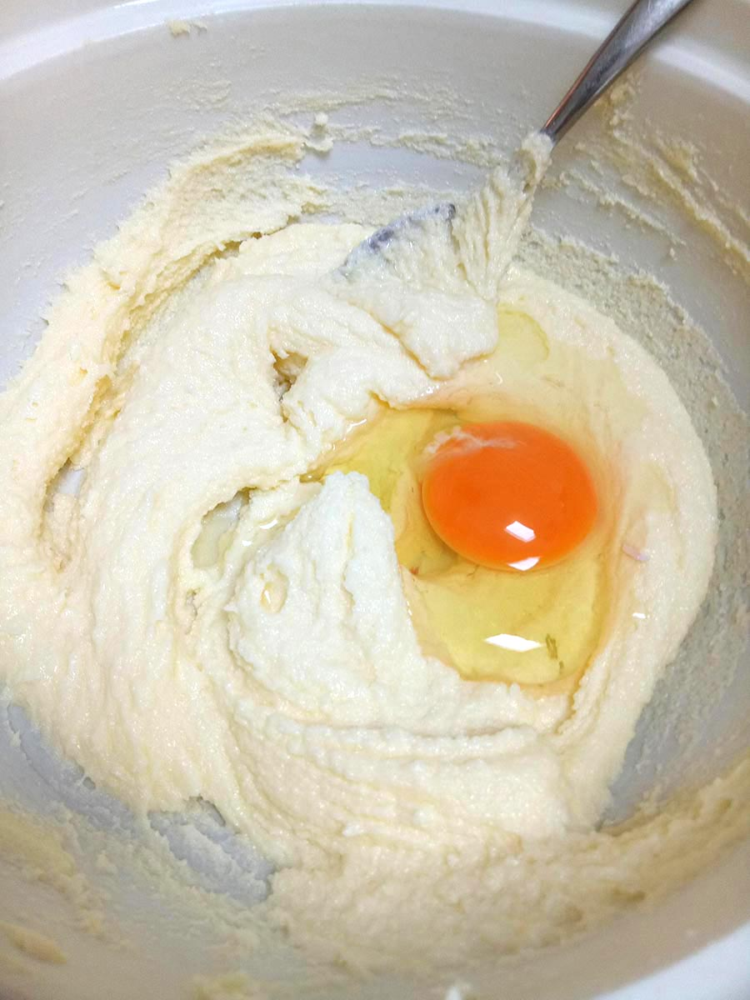Mix the butter and sugar together until light and fluffy.
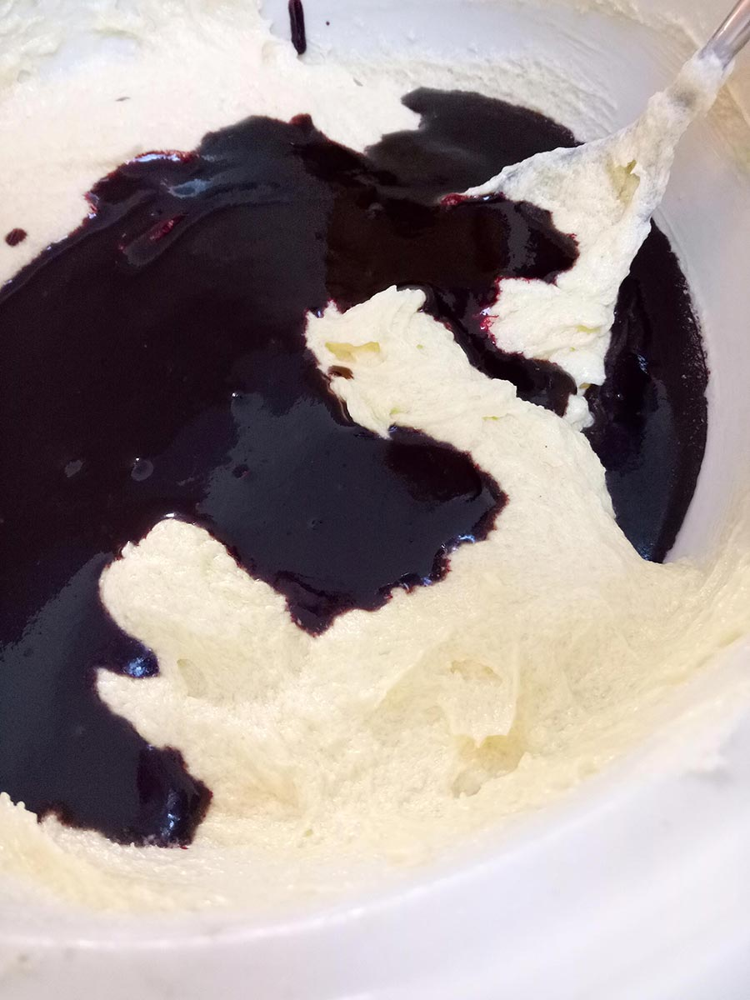Add 2 eggs, one at a time then mix until the mixture becomes smooth.
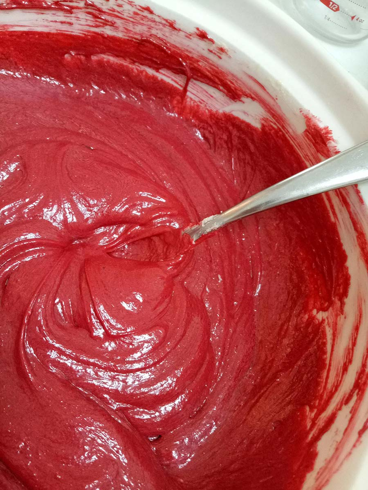Add the red food colouring, cocoa powder, and cooking oil into the mix, then add the vinegar. Put these images beside each other.
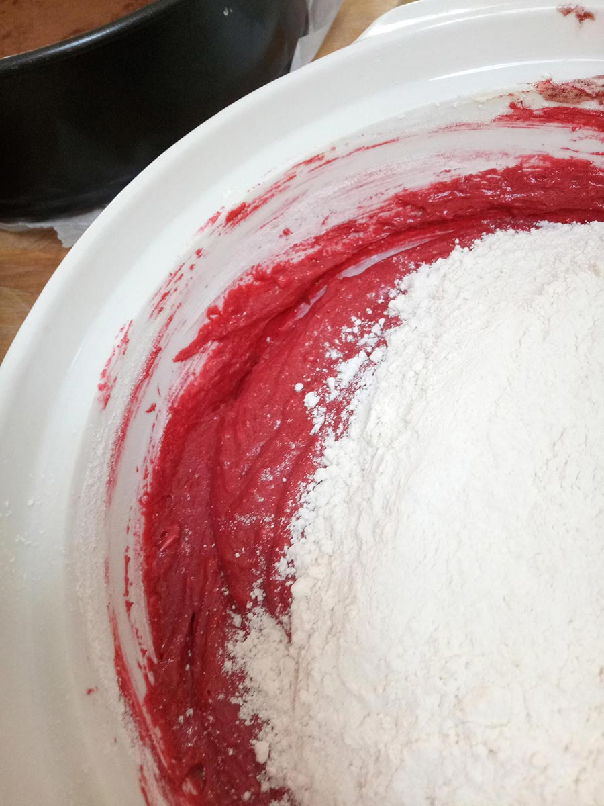Sift the flour, baking soda and salt into a small bowl and pour the buttermilk into a cup. Adding half of each at a time, mix until there are no lumps.
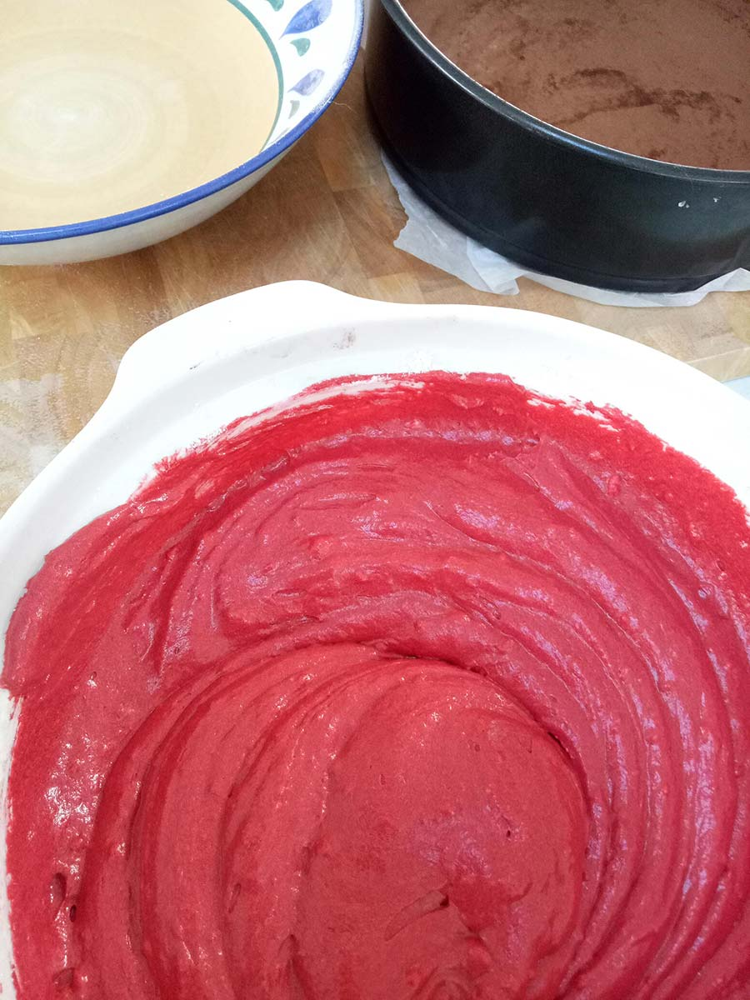The cake mixture is now finished.
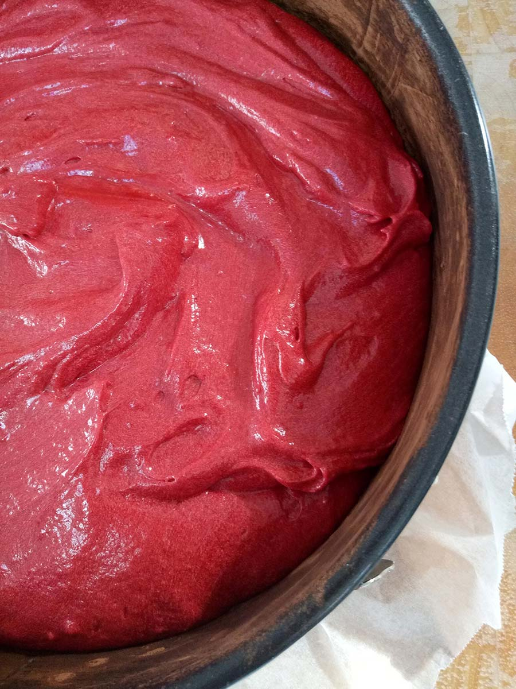 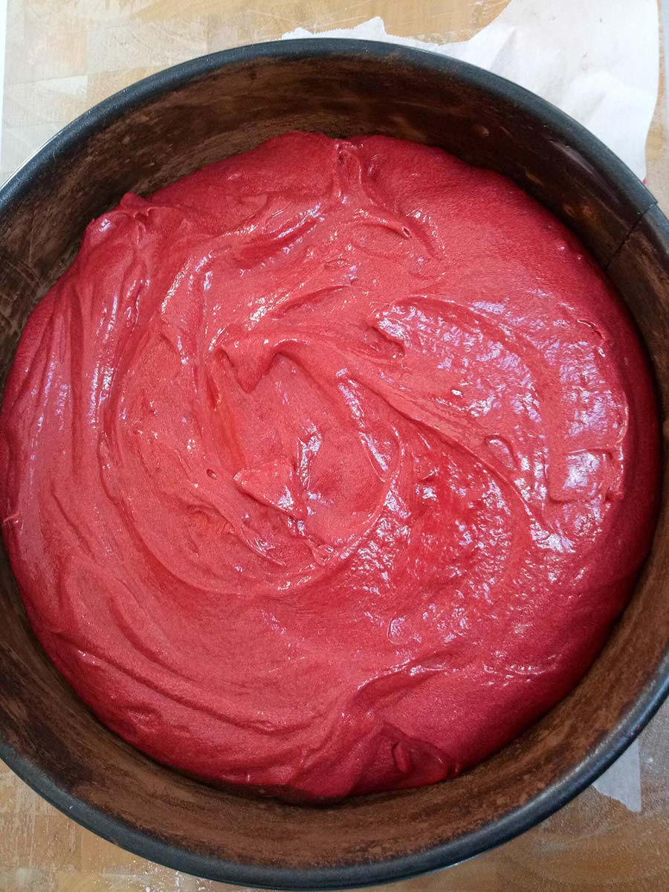Tip the mixture into the cake tin, then cook in the oven for 1 1/2 hours.


Take the cake out and wait 1 hour for it to cool down.
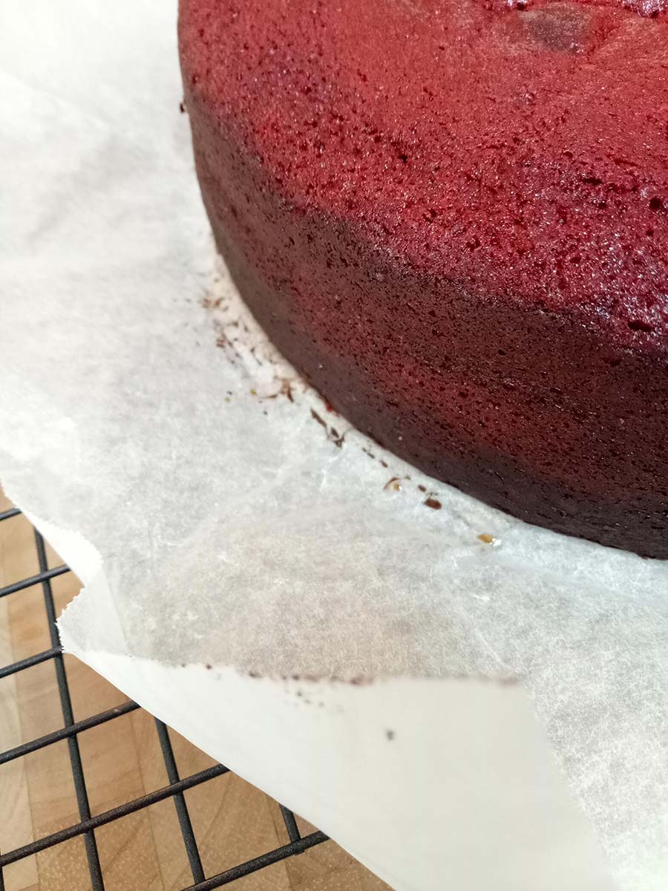Take the cake out of the tin.
Put the butter and cream cheese into a bowl then combine.
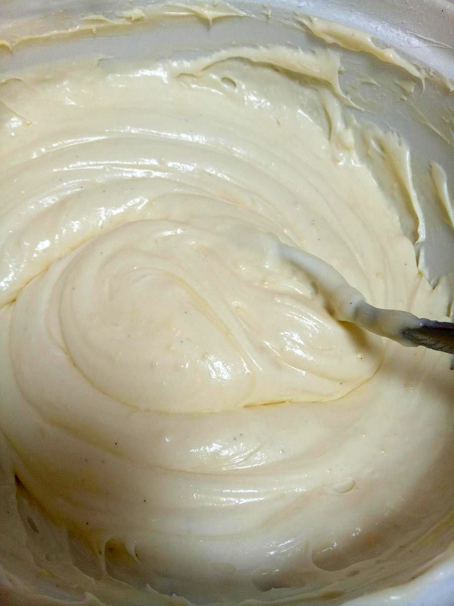Keep mixing, then add the vanilla.
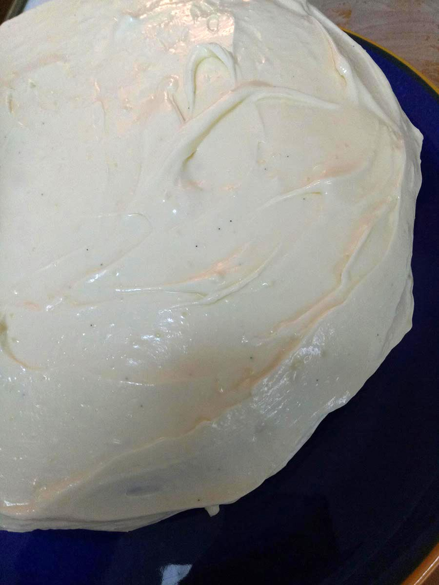 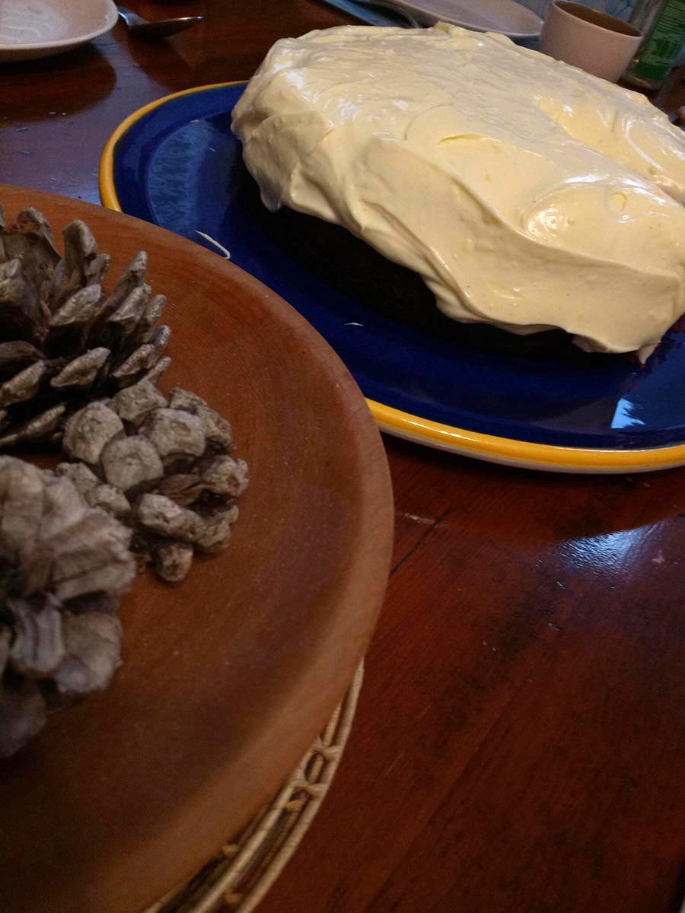Ice the cake and enjoy.
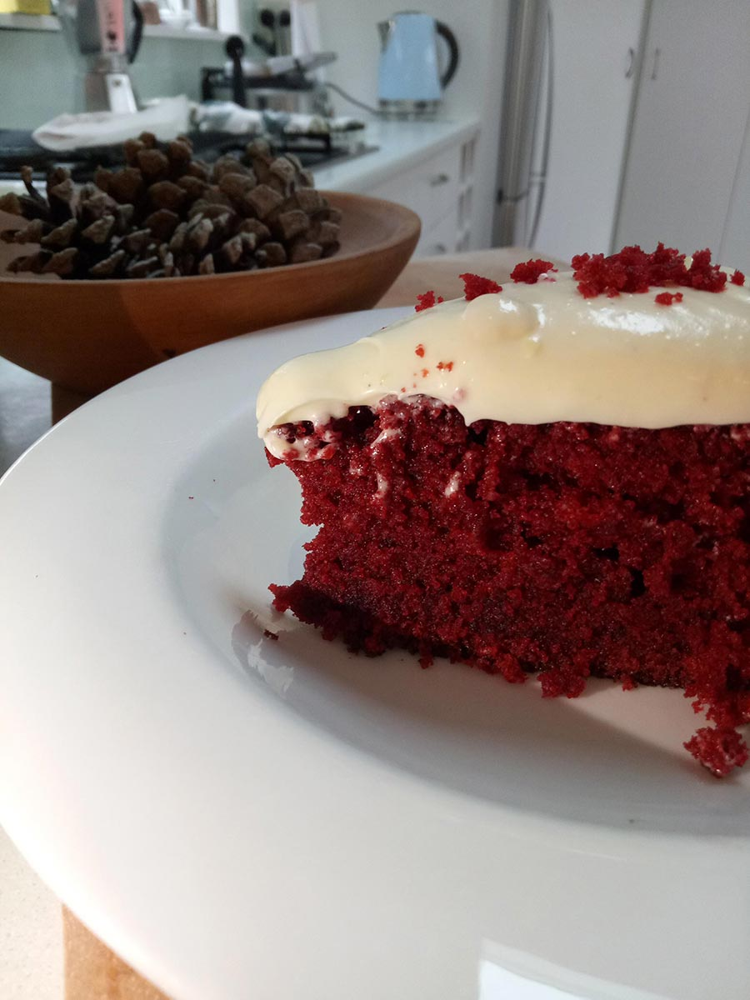